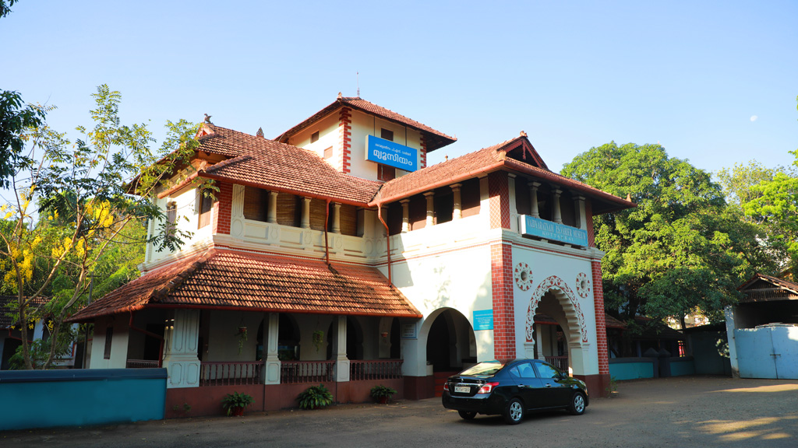
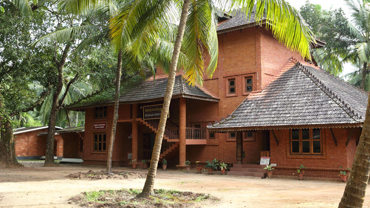
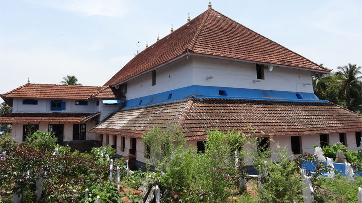

Nilambur Conolly's Plot

An exclusive place dedicated to teak and it is one of the oldest teak plantations in the world – the Conolly’s Plot. Named after H. V. Conolly, then Collector of Malabar, in 1842 initiated the action to plant teak here and that resulted in the world-famous teak plantation. The place is home to numerous large teak trees. After a short walk through the Kerala Forest Department area, one has to cross a beautiful hanging bridge, which is the longest in Kerala, built across river Chaliyar, to reach the Conolly’s Plot. The plantation also houses a big tree that has a girth of 420 cm. This is one of the oldest surviving man-made teak plantations in the world. You can stroll along the plot for hours.
Nedumkayam Rainforest

Nedumkayam Rainforest in Malappuram district has a magic around it: just step into it and within moments, the scent of virgin forest will take over all your senses. The fresh air and clear water along with a wealth of rare species of flora and fauna, will make you wonder why you didn’t come here before. Located 15 km from Nilambur, Nedumkayam Rainforest is part of the Nilgiri Biosphere Reserve, and is one of the main reasons to visit Malappuram district. Elephants are a major attraction of the jungle here, and a taming camp for jumbos is a tourist-magnet. Apart from elephants, bison, tiger, rabbit, blue monkey, bear, wildcat and deer are some of the wild animals spotted in the forests. With more than 200 species of birds, the forest has been classified as an ‘Important Bird Area’ (using an internationally agreed set of criteria to identify globally important places for the conservation of bird populations). White-rumped Vulture, Malabar Parakeet, Malabar Grey Hornbill, Crimson Backed Sunbird, Lesser Adjutant and Rufous Babbler are some of the commonly spotted birds in the rainforests.
Kottakkal Arya Vaidya Sala
Established in 1902 at Kottakkal in Malappuram district by the late physician and philanthropist, Vaidyaratnam P. S. Varier, Arya Vaidya Sala has grown into one of the pioneering institutions of Ayurveda in the country. The 119-year-old institution has branches in nearly all the main cities and towns in the country, and has more than 1,600 authorised dealers. It offers Ayurvedic treatments, medicines and therapies to patients from across the globe. The healthcare centre runs Ayurvedic hospitals at Kottakkal, Kochi and Delhi.Apart from engaging in research activities, the centre publishes periodicals and books on Ayurveda, cultivates medicinal plants and organizes educational programmes. The founder, Dr P. S. Varier, started the Ayurveda Pathasala in 1917 which later became Vaidyaratnam P. S. Varier Ayurveda College. AVS also runs a Kathakali academy, named P. S. V. Natyasangham, where the classical dance form is taught and performed. P. S. V. Natyasangham is known for its strict adherence to the classical tenets of performance and meticulous training, and has produced talented artistes. A museum that preserves the personal belongings of Dr. Varier and documents the milestones in the history of Arya Vaidya Sala was established in 2002. It also chronicles the renaissance in the field of Ayurveda and its history.
Tirur Thunchan Memorial
A cultural and research centre commemorating the father of Malayalam language Thunchath Ramanujan Ezhuthachan. This great bard of Malayalam who rendered the Indian epics like Mahabharata and Ramayana in his own style, brought a new light into the life of the common Keralites, who had no access to Sanskrit at that time. Thunchan Memorial is situated precisely at the same spot where the poet lived and taught in his open-air school. The iron stylus with which Ezhuthachan wrote his texts on palm leaves and the ancient kanjira tree under which he composed his poems are treasured exhibits here. The memorial has a Saraswati Manadapam - a structure in granite; an auditorium with a seating capacity of 500, an open-air stage, cottages for guests, dormitory, dining hall and two ponds. The research library here has a collection of around 15,000 books and 120 manuscripts. Students, research scholars and those who love the language frequent the centre from all over the country. The National Manuscript Mission has designated Thunchan Memorial Trust as its Manuscript Resource Centre to survey, document and electronically report manuscripts of north Kerala. The Thunchan Literary Museum here, that depicts the different stages of development of the Malayalam language, is the only one of its kind in any Indian language. The centre is also popular in connection with Vidyarambham, the ritual in which children are initiated into the world of letters.
Ponnani Jama-at Mosque
Jama-at Mosque, a 600-year-old mosque, is an important pilgrim centre of the Muslims of Kerala and has given Ponnani the name, ‘Mecca of the East’. It is said that the mosque was designed by a Hindu carpenter for a Sufi Saint from Yemen. The carpenter had an untimely death during construction and was buried inside the mosque with all due respect. The four-day annual festival at the mosque (nercha) is celebrated in April. Adjoining the mosque is the mausoleum of the Malappuram Shaheeds (martyrs) whose brave exploits have been immortalised in the Mappila Ballads.